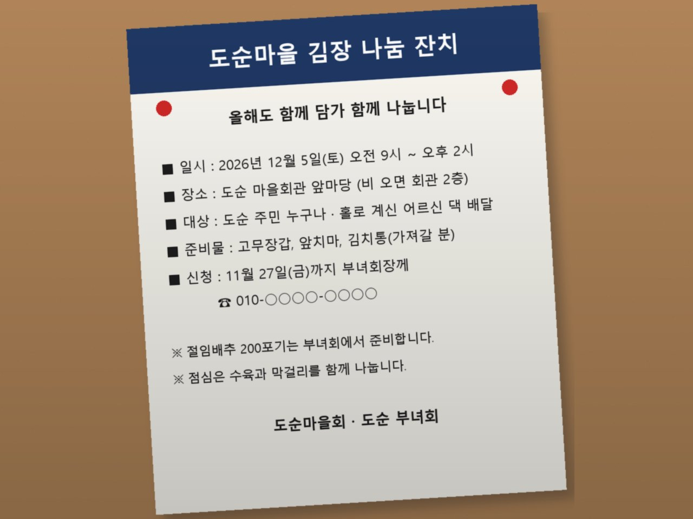
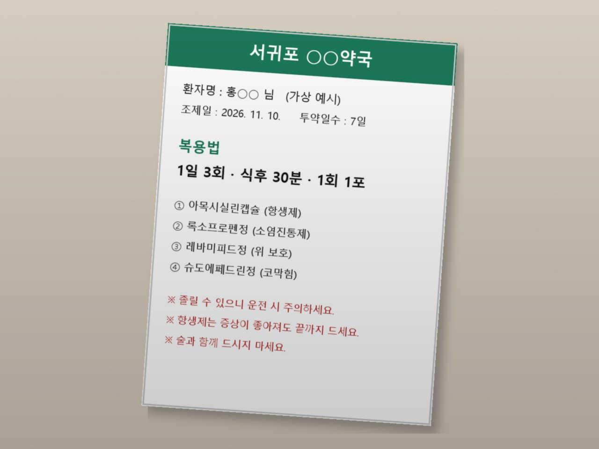
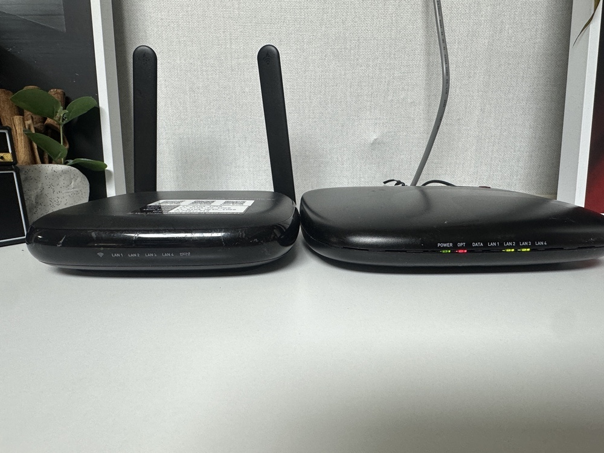

← 자료실 처음으로
1차시 · 2026. 11. 12.(목) 10:00~12:00 · 마음에도순
클로드에게 말 걸기
파란 대괄호 [이렇게] 표시된 곳만 내 상황으로 바꾸세요. 오늘 나오는 것은 전부 무료 계정 으로 됩니다.
"똑같이 물었는데, 옆 사람은 왜 더 좋은 답을 받았지?"
비결은 딱 세 가지입니다. 오늘은 그 세 가지로 생활 메시지를 쓰고, 사진 속 글자를 읽히고 , 인터넷에서 찾아 확인 하는 것까지 해 봅니다.
오늘 가져갈 것 ✉ 상황별 메시지 📷 사진 → 글자 → 표 🔎 출처 붙은 검색 답 📌 패들렛 첫 글
1 2 3 4 5
6 7 8 도전 퀴즈
1
클로드 가입하고 화면 둘러보기 15분
크롬 주소창에 claude.ai 입력
Google로 계속하기 누르기 → 내 구글 계정 고르기이름·나이 확인 질문이 나오면 차례로 답하기
가운데에 입력창 이 보이면 끝!
입력창 여기에 부탁을 적고 Enter ＋ 단추 사진·파일 올리기 (오늘 6번에서 씁니다)🎤 마이크 타이핑 대신 말로 입력 새 대화 왼쪽 위 — 주제가 바뀌면 새 대화 무료 사용량 무료 계정은 몇 시간마다 쓸 수 있는 양 이 정해져 있어요. "한도에 도달" 안내가 뜨면 짝과 화면을 함께 보며 이어 가고, 집에서 몇 시간 뒤 다시 해 보세요. 휴대폰 앱스토어·플레이스토어에서 Claude 앱 → 같은 구글 계정으로 로그인하면 대화가 이어져요
🖥 클로드 화면 둘러보기 (번호로 설명)
안 되는 분은 손 들어 주세요. 구글 계정이 없으면 이메일로 가입해도 됩니다(메일로 온 코드 입력).
2
첫 대화 — 아무거나 물어보기 5분
부담 없이 하나 골라 보내 보세요. 틀려도 아무 일도 안 일어납니다.
프롬프트 1 — 인사
안녕! 나는 서귀포 도순동에 사는 [귤 농사짓는 사람 / 주부 / 퇴직한 교사] 야.
너는 무엇을 도와줄 수 있어? 내 생활에서 쓸 수 있는 예시 5가지만 쉽게 알려줘.
프롬프트 2 — 재미로
제주 사투리 '혼저옵서예', '폭삭 속았수다'를 서울 사람에게 설명하듯 알려줘. 예문도 하나씩.
3
패들렛 입주하기 10분
패들렛은 우리 반 온라인 게시판 입니다. 4번의 수업 동안 결과물을 여기에 올리고 서로 구경합니다.
우리 반 패들렛 열기 ↗
🖥 패들렛 화면 둘러보기
위 단추를 누르거나, 칠판의 QR 을 폰으로 찍기
오른쪽 아래 ＋ 누르기
제목에 내 이름(별명) , 본문에 아래 자기소개 붙여넣기 → 게시
프롬프트 3 — 자기소개, 클로드에게 맡기기
수업 게시판에 올릴 내 자기소개를 3줄로 써줘. 재밌고 따뜻하게, 이모지는 두 개만.
- 불러 줬으면 하는 이름: [도순 귤 언니]
- 좋아하는 것: [오름 걷기, 믹스커피]
- 이 수업에서 해 보고 싶은 것: [손주에게 보여 줄 발표자료]
🍊 안녕하세요, '도순 귤 언니'라고 불러 주세요!
오름 걷고 나서 마시는 믹스커피 한 잔이 제 행복입니다.
이번엔 손주에게 자랑할 발표자료를 꼭 만들어 보고 싶어요 ☕
4
부탁의 3요소 — 역할 · 상황 · 형식 오늘의 핵심 15분
① 역할 "너는 [소비자 상담] 전문가야" ② 상황 "지금 [이런 일] 이 있어" ③ 형식 "[5줄 문자] 로 써줘"
같은 부탁, 결과가 이렇게 다릅니다
✗ 대충 부탁 반품 문자 써줘
○ 3요소 부탁 너는 소비자 상담 전문가야. 인터넷에서 산 운동화가 사이즈가 작아. 판매자에게 보낼 정중한 교환 문자를 5줄로 써줘.
왼쪽은 어떤 물건인지, 왜 반품하는지 몰라서 빈칸투성이 문자가 나옵니다. 오른쪽은 바로 보내도 되는 문자가 나옵니다.
💡 덤으로 말투 까지 정하면 더 좋습니다 — "정중하게" · "친근하게" · "짧게"
5
상황별 생활 메시지 세 가지 15분
하나씩 복사해서 보내 보세요. 파란 글씨만 내 상황으로 바꾸면 됩니다.
프롬프트 4 — 반품 · 교환
너는 소비자 상담 전문가야.
인터넷에서 산 [운동화] 가 [사이즈가 작아서] 교환하고 싶어.
판매자에게 보낼 정중한 문자를 5줄 이내로 써줘.
안녕하세요, ○월 ○일에 운동화(250mm)를 주문한 ○○○입니다.
받아서 신어 보니 사이즈가 조금 작아 255mm로 교환하고 싶습니다.
상품은 착용하지 않았고 포장도 그대로 보관 중입니다.
교환 절차와 반송 방법을 안내해 주시면 감사하겠습니다.
프롬프트 5 — 귤 주문 안내
너는 친절한 귤 농장 주인이야.
올해 [노지 감귤] 주문을 받으려고 해. 가격은 [5kg 2만 원, 10kg 3만 5천 원] , 택배비 포함.
지인 단톡방에 올릴 주문 안내 글을 써줘. 주문 방법(이름·주소·수량을 문자로)도 넣고, 이모지는 두 개만.
프롬프트 6 — 경조사 인사
[동네 후배] 가 [결혼] 해.
축하 문자를 세 가지 분위기로 써줘 — 점잖게 / 따뜻하게 / 살짝 유쾌하게.
마음에 안 들면 새로 쓰지 말고 이어서 말하세요 — "더 짧게" · "더 정중하게" · "두 번째 걸로 조금만 고쳐줘"
☕ 쉬는 시간 10분 — 잠시 쉬었다가 함께 이어갑니다
6
사진 속 글자 읽히기 오늘의 핵심 20분
게시판 안내문, 약 봉투, 고지서 — 사진만 찍어 올리면 클로드가 글자를 읽고 정리해 줍니다. 타이핑할 필요가 없어요.
① 마을 안내문 → 내 달력용 메모

이 사진 내려받기
위 사진 내려받기 (휴대폰이면 게시판을 직접 찍었다고 생각하세요)
입력창 ＋ → 파일 업로드 → 사진 고르기 → 아래 프롬프트 붙여넣기
프롬프트 7 — 안내문 사진 읽기
이 사진은 우리 마을 게시판 안내문이야.
글자를 그대로 옮겨 적고, 그 아래에 날짜·시간·장소·준비물·신청 마감을 표로 정리해줘.
잘 안 보이는 글자는 추측하지 말고 [안 보임] 이라고 써줘.
마지막에 가족 단톡방에 보낼 3줄 알림도 써줘.
| 항목 | 내용 |
| 날짜·시간 | 2026년 12월 5일(토) 오전 9시 ~ 오후 2시 |
| 장소 | 도순 마을회관 앞마당 (비 오면 회관 2층) |
| 준비물 | 고무장갑, 앞치마, 김치통(가져갈 분) |
| 신청 마감 | 11월 27일(금)까지 부녀회장께 |
📢 12/5(토) 아침 9시 마을회관 김장 나눔 잔치! 고무장갑·앞치마 챙기기 🧤
② 약 봉투 → 먹는 시간표

이 사진 내려받기
프롬프트 8 — 약 봉투 읽기
이 약 봉투 사진을 읽고, 어르신도 알아보기 쉽게 정리해줘.
1. 하루 중 언제 먹는지 시간표 (아침·점심·저녁, 식후 30분)
2. 약마다 무슨 약인지 한 줄
3. 조심할 점은 큰 글씨로
의학적인 판단은 하지 말고, 봉투에 적힌 내용만 옮겨줘. 궁금한 점은 약사에게 물어보라고 덧붙여줘.
⚠ 진짜 사진을 올릴 때는 주민번호 · 카드번호 · 계좌번호 · 환자 이름 을 가리고 찍으세요. 약은 반드시 약사·의사의 안내 를 따릅니다.
③ 기계 화면 · 불빛도 사진으로 물어보기 (시간 나면)
사진으로 물어보기 — 인터넷이 안 될 때
집에 인터넷이 안 돼서 공유기와 모뎀 불빛을 찍었어.
불빛 색깔을 보고 무엇이 문제인지 알려줘.
내가 고칠 수 있는 건지, 통신사에 전화해야 하는 건지도 알려줘.

이 사진 내려받기
7
웹 검색 — 찾아서, 출처까지 핵심 15분
클로드는 인터넷에서 찾아보고 답할 수 있습니다. 요즘 소식·영업시간·제도처럼 바뀌는 정보 는 꼭 "웹에서 찾아서"라고 말하세요.
입력창 아래 ＋ (또는 도구 단추)에서 웹 검색(Web search) 이 켜져 있는지 확인
아래 프롬프트에서 파란 글씨만 바꿔 보내기
프롬프트 9 — 생활 정보 찾기
웹에서 찾아서 알려줘.
[올해 겨울 독감 예방접종 무료 대상과 기간] 이 궁금해. 나는 [서귀포시에 사는 66세] 야.
- 쉽게 5줄로 정리하고
- 답마다 어디서 찾았는지 출처 링크를 붙이고
- 언제 기준 정보인지 날짜도 써줘. 못 찾은 건 모른다고 해.
✔ 65세 이상은 무료 접종 대상입니다. [출처: 질병관리청 ○○ 공지, 2026.○.○]
✔ 가까운 보건소·지정 병원에서 신분증을 가지고 가면 됩니다.
… (출처 링크 3개)
찾은 답, 이렇게 확인해요
출처 링크를 직접 눌러 보기 — 관공서·공식 사이트인지
날짜 가 올해 것인지 — 작년 정보일 때가 많아요중요한 일(병원·돈·서류)은 전화로 한 번 더
프롬프트 10 — 이번 주말 나들이
웹에서 찾아서, [이번 주말] [서귀포] 에서 [어르신과 아이] 가 함께 갈 만한 행사나 장소 3곳을 알려줘.
날짜·장소·요금을 표로, 출처 링크를 꼭 붙여줘.
⚠ 클로드는 그럴듯하게 지어낼 때 가 있습니다. 링크가 없거나 링크를 눌러도 그 내용이 없으면 믿지 마세요.
8
오늘 결과 한 장 패들렛에 올리기 5분
오늘 받은 답 중 제일 마음에 든 것 하나를 복사
패들렛 ＋ → 제목 "1차시 — [내 이름] " → 붙여넣기 → 게시
다른 분 글에 ❤ 하나씩 눌러 주기
우리 반 패들렛 열기 ↗
+
같은 부탁, 말투 세 가지 · 카드 뽑기 도전 자유
※ 먼저 끝낸 분만 — 안 해도 다음 시간에 지장 없습니다.
도전 1
방금 쓴 문자를 세 가지 말투로 다시 써줘 — 정중하게 / 친근하게 / 한 줄로 짧게.
그리고 어떤 상황에 어떤 걸 쓰면 좋을지 한 줄씩 붙여줘.
도전 2 — 생활 프롬프트 카드 30장 에서 랜덤 뽑기 로 한 장 뽑아 해 보기
?
오늘의 OX 퀴즈 10분
클로드에게는 존댓말로 정중하게 부탁해야 답을 잘해 준다.
X — 반말이든 존댓말이든 상관없습니다. 중요한 건 역할·상황·형식 이 들어갔느냐입니다.
사진을 올려서 글자를 읽게 하면, 흐린 글자는 클로드가 알아서 맞게 채워 준다.
X — 틀리게 채울 수 있습니다. "안 보이면 [안 보임]으로 써줘"라고 부탁하고 원본과 대조하세요.
요즘 소식이나 제도는 "웹에서 찾아서, 출처 붙여서"라고 부탁하는 게 좋다.
O — 출처 링크를 눌러 날짜와 내용을 직접 확인합니다.
오늘 기억할 것 세 줄
1. 부탁은 역할 · 상황 · 형식 , 마음에 안 들면 같은 창에서 "~만 고쳐줘"
2. 타이핑 대신 사진 — 안 보이는 글자는 추측하지 말라고
3. 바뀌는 정보는 "웹에서 찾아서, 출처 붙여서"
📣 다음 시간(11.19) — 클로드로 웹 발표자료 를 만들고, 클로드가 카카오톡 나와의 채팅방 으로 보내 주게 합니다. 카카오 계정(아이디·비밀번호) 을 꼭 알고 오세요. 발표 주제도 하나 생각해 오세요(동호회·가족·마을·취미 무엇이든).
클로드로 만드는 내 일상 · 마음에도순 · 1차시 | 제주도민대학 열린강의실 · 강사 강지애